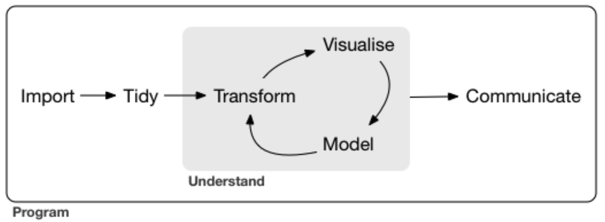
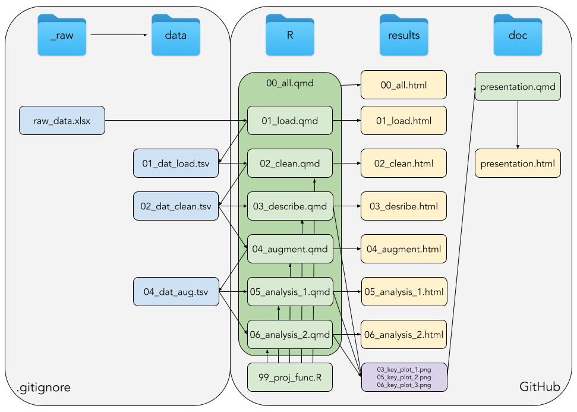
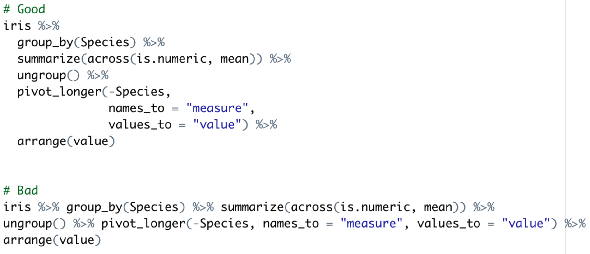

Project FAQ
Data
Is this data set ok to use?
- Where can I find data? Rethink the question: Discuss in your group what are your interests and then find data related to your problem, there are literally terabytes of publicly available data, i.e. don’t just google “data”, be specific
- In order for you to demonstrate that you master the entire bio data science cycle, you must choose a bio data set, which requires cleaning and tidying
- It would be good, if the data set requires joining, if not, consider artificially splitting it, to demonstrate that you master joining
- One approach could be to work on reproducing results from a paper. Here, you can even consider improving the data visualisations or adding something extra
- Do not use a data set from one of the course exercises. Doing so would not allow you to demonstrate that you are independently capable of performing a bio data science analysis
- You are 100% free to choose bio data from any resource as long as it meets the above requirements
How should we handle NAs in the data?
- Depends, does your data set come with a readme, which allows you to make a decision regarding NAs?
- Be careful not to simply drop all NAs as you might drop observations, where columns of interest have complete data
How should we handle binary variables?
- In case your variable contains categories, i.e. values, where the question “Is one larger than the other” is nonsensical, then encode as factors
How do we handle nonsensical data points?
- If you believe the data points are nonsensical, e.g. manual typing errors, then exclude them, but be very clear about which data (groups of) points were excluded and why
Can we subset the data?
- Yes, if you are particularly interested in a subset of the data, then that is perfectly fine. Just be aware, that any choice you take with the data, you must be able to account for why you took that choice
- You should NOT just sample 100 observations as was done in the exercises to reduce runtime. However, if your data set is very large, consider down-sampling either randomly or by some metric of association. For the latter e.g. perform a test and identify the top X observations, save those to file and continue from there.
- For large data, try appending “.gz” to your files, when you write them using
write_tsv(), this will invoke gzip-compression
Input/output files
How can we get a better overview of the data file flow?
- Consider creating a flow chart of “your data journey”. It will force you to think about how files are connected and how input/output flows, check out e.g. draw.io for this
How can we write a file with e.g. factor encoding or a nested tibble?
- This can only be done by writing an R-object. However, this is for future reference - in this course if at all possible, stick to flat text files, e.g. .tsv or .csv
How do we handle different naming conventions?
- DO NOT do a manual search and replace in Excel. That defeats the whole purpose of this course
- Fix names using a programmatic approach. The
stringr-package is extremely useful in this context
Where should we place external files?
- Consider creating an “images” folder in the “doc” folder, from where you can input images to your presentation
Modelling
What should we include in the modelling part?
- We have worked with fitting a linear regression and we have done a PCA. You could do something along those lines or something of similar complexity
- This is not a modelling course. We briefly visited modelling to bridge the process of going from the raw data to analysis ready and then communication via data visualisation. Therefore, do not start fitting a full fledged machine/deep learning model, it is a time-void, which you cannot “afford” to get sucked into
- Also, mind that the focus of this course is to make you realise that even though you have been trained in delivering results, then the process of arriving at the results in a reproducible manner is equally important - The process is the product!
Do we HAVE to do a PCA?
- Does it make sense to do a PCA-analysis in your project? If you have group labels and you want to visualise to see if there is a separation, then a PCA is a good first step
Our model is not “performing very well”. What should we do?
- Leave it as is. The focus of this course is not on the results, but on the reproducible process of arriving and communicating said results
Coding
What goes in “augment”?
- If you google “Augment“, you will get “make (something) greater by adding to it; increase”, in other words, when you add e.g. variables to your data, which was not there initially, e.g. like we did, when we calculated the BMI from existing information on weight and height
- You should think of the augment script as the place, where you create your “database” for everything that happens afterwards, i.e. all your analyses and ideas
- Create that “database” and then load it into your downstream scripts
- Augment == Adding something
- Be aware, that if you downstream discover a need to create a variable, you will need to go back to the augment and update
Can we mix base R and tidyverse?
- No, you might as well get used to it - Tidyverse all the way! (This is a tidyverse course)
- If you use base, like e.g.
my_data$my_var <- 1:4ormy_data$my_var[1]or similar, then you will get points deducted in the evaluation of your project - Again, the process is the product and it matters much if you are using the course correct dialect of
R. What you choose to do after the course is your choice
What if we can’t make it work in tidyverse but only in base R?
- If you can make it work in base R, you can make it work in tidyverse
Is it okay to use e.g. the base function sum()?
- Yes, think of it this way: R has as core functionality to do statistics. Tidyverse is for performing the data manipulation surrounding these calculations. Therefore, using functions such as sum(), mean(), sd(), etc. is naturally fine
- E.g. recall, when we did the
group_by()\(\rightarrow\)summarise()-workflow, we used the descriptive statistics functions - Also, we used the
lm()-function for fitting a linear regression. Tidyverseaims to replace the inconsistant and low legibility of base R with respect to data manipulation and visualisation - It does not replace the core functionality of doing statistics
How do we know if there is a tidyverse function we should use rather than base?
- Identify the general area of what you’re working with. E.g. if strings, then go to your RStudio session and find the console and type
stringr::and hit tab, then you can look through the functions - Look and search in the R4DS2e-book
- Ask on the Posit community pages
Can we use package X for analysis/visualisation?
- If the package performs a lot of the work, which you are to demonstrate that you can do, then absolutely no. Do not use packages, where you call a plot-my-data-function and the ggplot-magick happens that will not allow you to demonstrate that you have met the course learning objectives
- For an example of and-then-magic-happens, see e.g. the
corrplot-package
How do we run the entire project incl. the presentation?
- Make sure to include a programmatic call to render a file
- Note, you can include one Quarto document in another
Should we create a Shiny app?
- The project deliverables are the GitHub repo and your presentation
- Remember, you do this project not for me as “your teacher”, but for you to internalize the knowledge you have been exposed to during the initial 10 weeks of teaching
- If you find Shiny interesting/fun, then by all means, please do create an app
- Note, Shiny apps are optional and will not give extra credit - Be careful with your time!
Should we create a package?
- If you find Rpackages interesting/fun, then by all means, please do create an Rpackage
- Note, Rpackages are optional and will not give extra credit - Be careful with your time!
When should we create functions?
- Remember DRY (Dont-Repeat-Yourself), so generally, if you do something more than once, it is a function
- However, we do not focus much on functions in this course, so don’t put too much effort into creating functions
- Place functions in
99_proj_functions.Ras illustrated in the overview - DO NOT hide your code away in functions, so that your main script just becomes 10 function calls. For this process-oriented course, show the code in your main
qmd-documents, i.e. 01_, 02_, …
Can we use loops?
- No, you should instead embrace functional programming and use functions from the
purrr-package. Revisit lab 6, if needed
Can we directly copy/paste a code chunk from an online source?
- No, that would be plagiarism. Understand the steps in the chunk and make the code your own
- I acknowledge that for coding this is not completely black and white, but please refrain from a direct copy/paste
Can we use chatGPT or similar for coding?
- No, of course not, the coding has to be done by the students, not an AI
- How would you know if we used an AI? I may not be able to tell or I may be, I wouldn’t recommend taking the risk
- Once through this course, AIs can be a powerful allied, but it requires skills and experience to use an AI productively, otherwise you will end up in “traps”
Coding style
How should we comment on our code?
- Remember, the point of writing verbose tidyverse code is that the code-becomes-the-comments. Think of it this way: The pipeline is the text on a page in a book, so before your pipeline, put a header/title on what is happening below, just as a title/header in a book
- The title/header will be what is generally going on, e.g. “Normalise all gene expression values using standard score approach” and the pipeline will be how that is actually done
- The pipe “%>%” is pronounced as “then”, when you “read” your code
How should we style our code?
- Strictly adhere to the Course Style Guide as introduced in the course
- Make sure that all scripts are styled the same way and be consistent in your coding style
- Your code should not be >80 chars wide, follow the vertical line in your editor
How should we style our plots?
- Be concise, “less is more”
- Make some nice and relevant plots. Show us that you’ve learned data visualisation. Remember legends, titles etc.
- Do not put 3 messages in 1 plot. Instead put each message into a different plot
- Be very careful with matching the text size in your plots to that of your presentation (trial-and-error)
GitHub
Where should we place the project?
- The project must be placed on the course GitHub
rforbiodatascienceXX, whereXXis the course year
Should our GitHub be public or private?
- Public, show the world what you can do!
Should we keep all the data on GitHub?
- No, GitHub is meant for code, not data, see the project organisation
What goes in the “doc” folder?
- The project organisation chart is a generic figure. You should not hand in a report. Your deliverable/product outcome for the project period is: 1) Your GitHub repository and 2) A presentation. Therefore, the “doc” folder would in this case contain your presentation
Why are there multiple “qmd-reports” in the “results” folder?
- In case you have a computationally intensive part of the project it can be an advantage to split into sub-reports and then collect in a master report (think e.g. large LaTeX reports)
- Overview, even if your report is not computationally intensive, then it may be long and splitting into sub-reports facilitate better overview
Should we include a README on GitHub?
- That would be a good way to briefly introduce what the contents of this repo is and something one would usually do
Should everything be on Github, also plots we don’t present?
- Yes, everything!
Exam/hand-in deliverables
What is the final product?
- A GitHub repository organised according to principles of reproducible data analysis
- A Quarto HTML-presentation following the IMRAD structure as elaborated in the project description
- This final presentation in HTML-format should be uploaded to DTU Learn
Do we need to hand in a report?
- No, no report is required!
Presentation
Should we include code in our presentation?
- Your presentation should follow the standard scientific IMRAD-structure, i.e. introduction, materials-and-methods, results, and discussion.
- Include certain decisions you took with the data and your reasoning herfore.
- If you found a particular challenging problem in coding, to which you found an elegant solution, include that in your presentation as an example
- The presentation is your chance to practice communicating insights to stakeholders
- Your audience will be same-level bioinformaticians
- Perhaps consider a graphical representation of your process going from raw to analysis-ready data
Should we include tables or plots?
- What makes sense? If you only have two numerical values, then perhaps a table is fine. If you have 100 observations, then a plot is likely better
- Remember, we are as humans evolutionary encoded to interpret visual information, not numbers
How do we add plots to the Quarto presentation?
- Output the plot as a png file using the function ggsave and include that png in your presentation. Think dynamically, we don’t want to type anything manually in our presentation
How do we get the presentation in wide-/full screen?
- Hit w and f while the HTML presentation is loaded
Should we split our presentation into sub-presentations?
- No, this is not necessary given the extend/size of this project. Just create one
qmd-file, which outputs an HTML-presentation
We are working on re-creating paper results. Should we re-create the exact same plots?
- Ideally, you re-create the plots and then you create your own improved version of the visualisation
Where should we “place” our Shiny app in our presentation?
- Demo it briefly at the end
How can we illustrate our data handling?
- Consider creating a flow chart, what are input files and how are they connected to final output?
How much code should we include in the presentation?
- The exam deliverables are two-fold. Code is the GitHub repo and your ability to communicate biological insights is in the presentation. Therefore, code could be included in the presentation if you faced and solved a particularly challenging problem in a clever way
How do we include data numbers in the presentation?
- You could from your script output a results table with relevant numbers as a .tsv file and then read that into the presentation and extract the numbers
- Remember, think dynamical reporting, what if your input data changes and you manually entered the numbers in your presentation? Then you wouldn’t be much farther than a powerpoint
What goes into the materials and methods section?
- Materials: What data did you use and where did you get it from?
- Methods: Which modelling did you use? Think of the methods section as a recipe for how to go from raw to results => Flow chart?
Should we interpret our results?
- Yes, you have to think about it as a “normal” project presentation
What about all the stuff we tried, which did not work?
- In the presentation, you should focus on what worked and what results you arrived at
- Exclude dead-ends from the presentation, but… Leave them in the repo, perhaps with an initial comment signifying that the following turned out to be a dead-end
- Think about this - Scenario: You’re working in a company and you and your team of 3 spend 6 months on a project, which turns out to be a dead-end. For future reference: Would the company be interested in knowing that this project was a dead end or should you delete everything and never speak of it again?
Project Check Up and Summary
IMPORTANT: Ask yourselves:
“Does our presentation follow the IMRAD structure?”
- Is the presentation created as one
qmd-file and output to a HTML? - Is the presentation clear and concise?
- Are we doing good data communication via good visualisations?
- Do we present a clear overview of the data process incl. any decisions made, e.g. using a flow chart?
- Are we clearly communicating a biological insight?
- Are we following standard guidelines? Sources, references, etc.
“Does our project include all components of the data science cycle?”

“Are we aware of and have included learning objectives as appropriate in the project?”
Check your project against the course learning objectives, as defined on the DTU course base
“Is our project-GitHub organised as instructed and can it run end-to-end via doit?”
(Note, this is a generic representation, your doc folder will contain your presentation)

“Does ALL our code in ALL our files follow the Course Style Guide?”
- Recall what we discussed in the course on styling
- See the Course Style Guide
- E.g.:

“Are we using base-R, where we should use tidyverse-R?”
- E.g. think about the following:

“Can we explain and justify the data decisions in the project?”
- IMPORTANT: In essence it does not matter which decision you took, what matters is your ability to explain and justify why you decided on that particular path in your analysis